Performance graphs
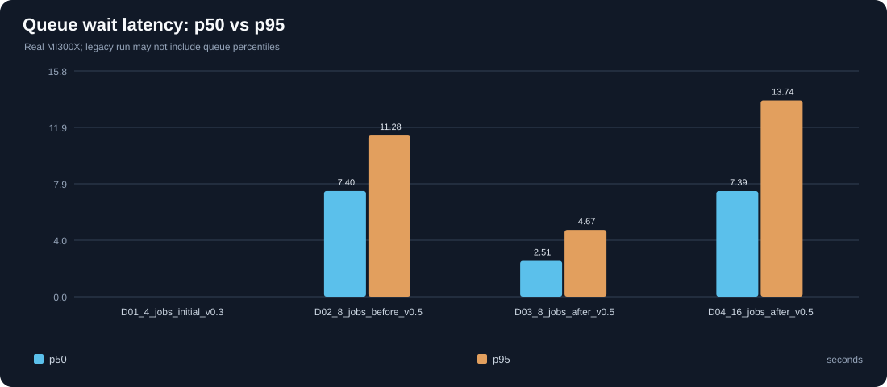
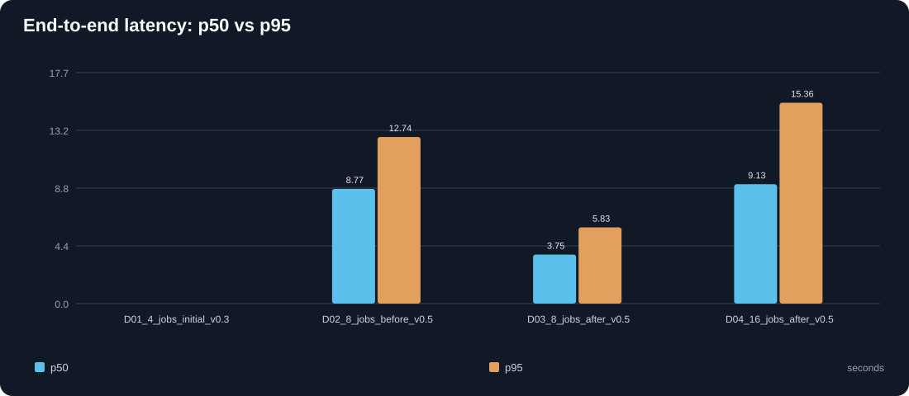
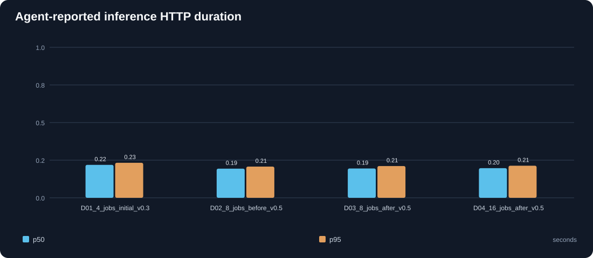
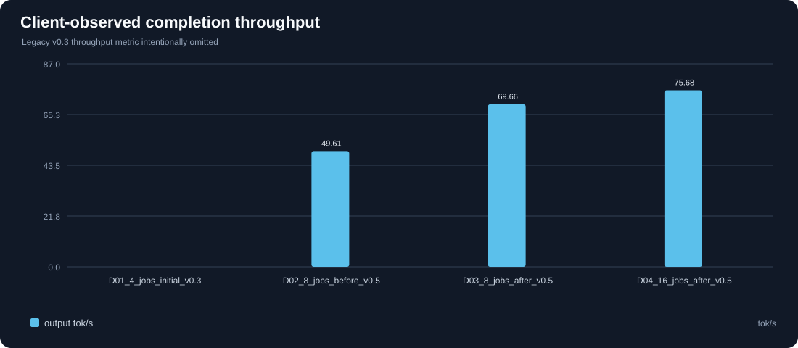
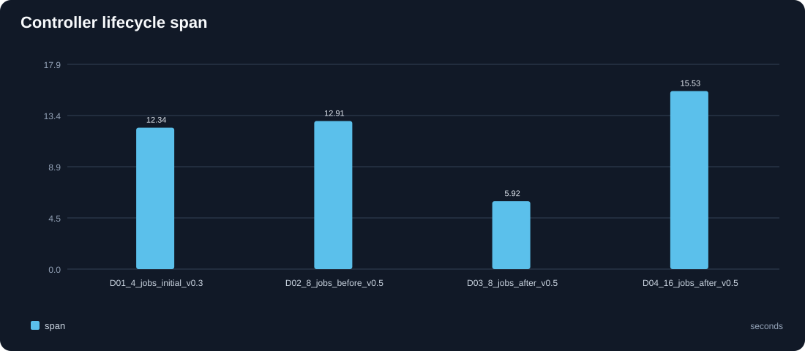
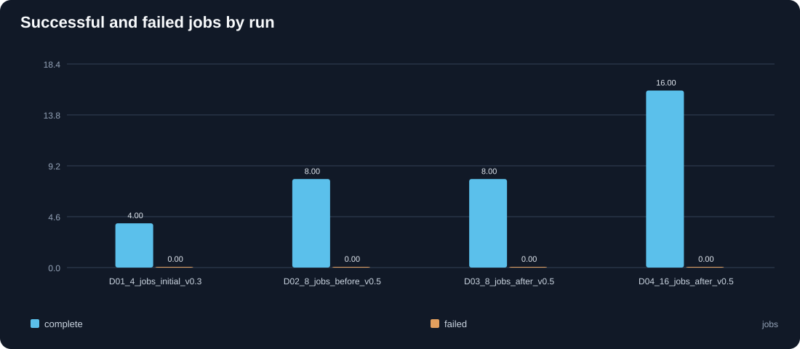
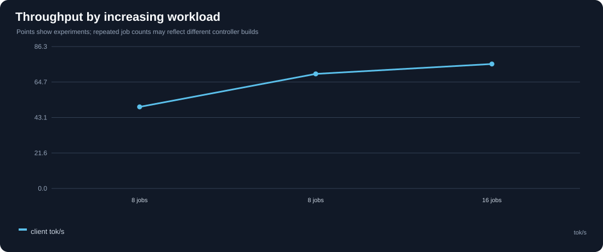
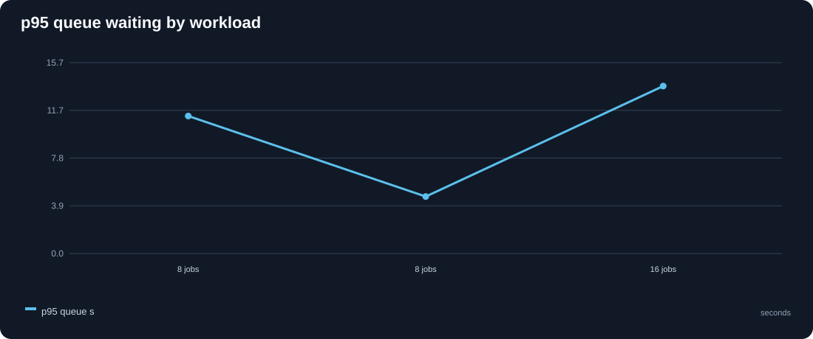
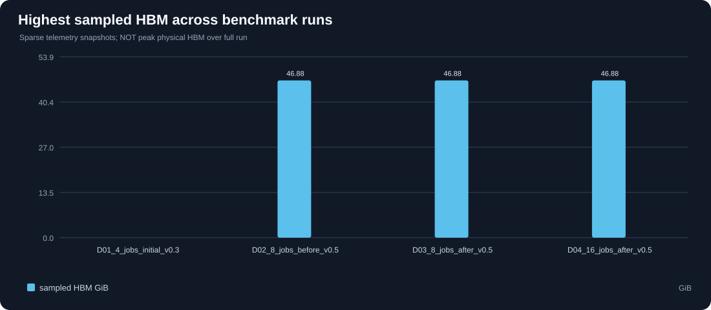
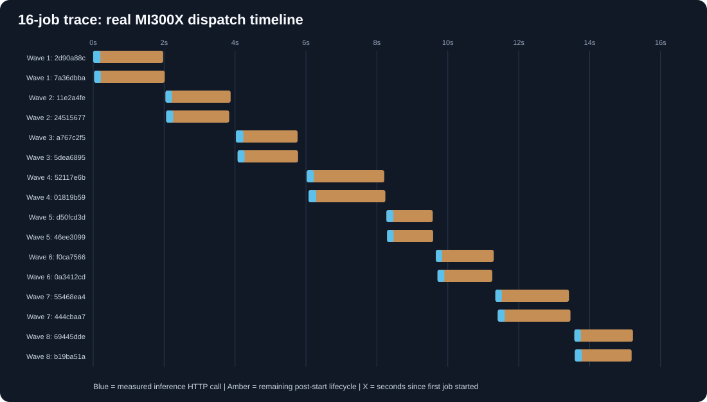
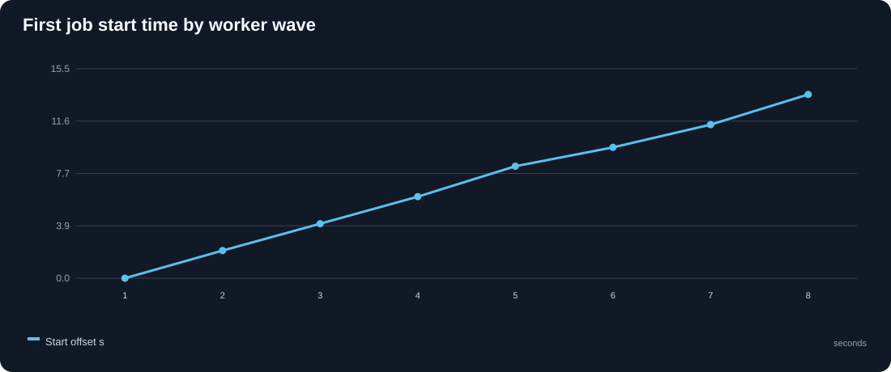
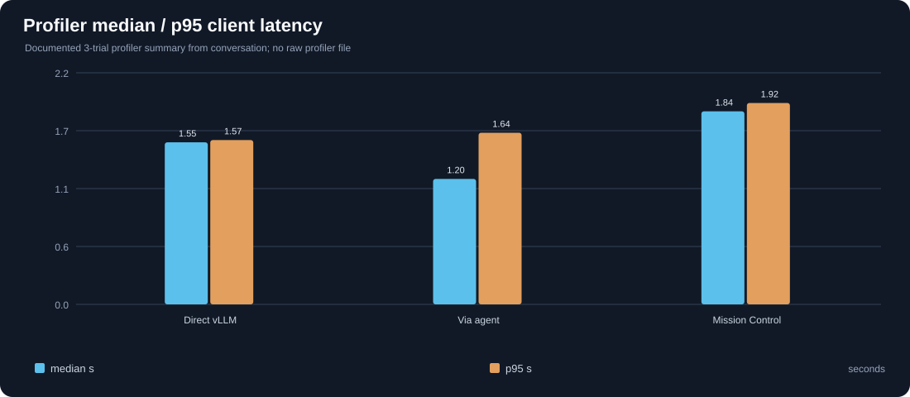
Real GPU benchmark run index
| Run Id | Evidence Type | Requested Jobs | Completed | Failed | P95 Queue Wait Seconds | P95 End To End Seconds | Observed Client Tokens Per Second | Gpu Poll Rows | Relative Source |
|---|---|---|---|---|---|---|---|---|---|
| documented_01_4_jobs_initial_v0.3 | documented_real_summary | 4.0 | 4.0 | 0.0 | sample_evidence/documented_benchmarks.csv | ||||
| documented_02_8_jobs_before_v0.5 | documented_real_summary | 8.0 | 8.0 | 0.0 | 11.2829 | 12.7369 | 49.607 | sample_evidence/documented_benchmarks.csv | |
| documented_03_8_jobs_after_v0.5 | documented_real_summary | 8.0 | 8.0 | 0.0 | 4.6745 | 5.8264 | 69.661 | sample_evidence/documented_benchmarks.csv | |
| documented_04_16_jobs_after_v0.5 | documented_real_summary | 16.0 | 16.0 | 0.0 | 13.7397 | 15.3572 | 75.68 | sample_evidence/documented_benchmarks.csv |
Same-job/model adjacent-run comparisons
Descriptive changes only. Matching the number of requests and model does not establish identical hardware state or configurations.
| Jobs | Model | Run Before | Run After | P95 E2E Before S | P95 E2E After S | P95 E2E Reduction Pct | P95 Queue Reduction Pct | Client Throughput Change Pct | Comparison Validity |
|---|---|---|---|---|---|---|---|---|---|
| 8.0 | Qwen/Qwen3-0.6B | documented_02_8_jobs_before_v0.5 | documented_03_8_jobs_after_v0.5 | 12.7369 | 5.8264 | 54.256 | 58.57 | 40.426 | descriptive only; same jobs/model, other settings may differ |
Interpretation rules
• p95/p99 calculated from few jobs are descriptive sample quantiles, not production guarantees.
• Legacy 4-job throughput uses the original script's makespan denominator and is not directly comparable to v2 client-observed throughput.
• GPU telemetry contains snapshots only; observed HBM is not a complete peak consumption measurement.
• Scheduler Lab runs synthetic service times and deliberately excludes real GPU/network/agent overhead.
• One MI300X serving endpoint cannot validate cross-GPU placement, and controller restart checks do not prove exactly-once physical execution.
• For research claims, keep raw evidence and repeat controlled runs across the same configuration.